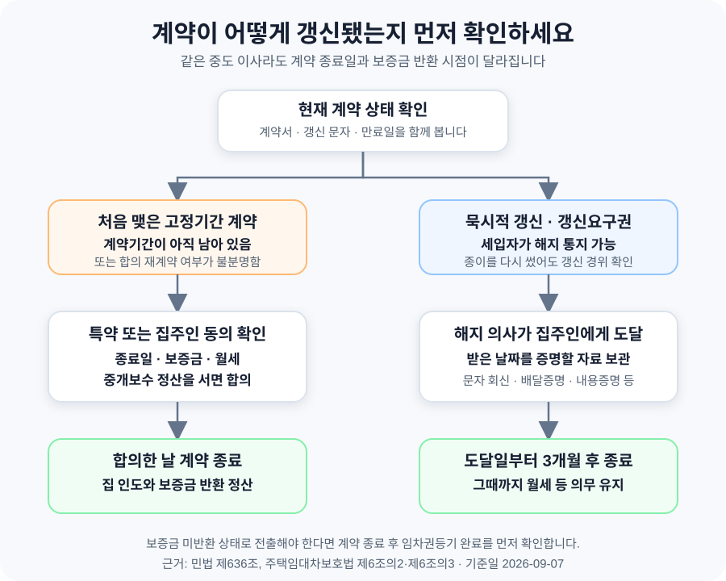

전월세 계약 만료 전에 이사하면 보증금과 중개보수는 어떻게 될까?
처음 정한 계약기간이 남았다면 개인 사정만으로 계약을 바로 끝내고 보증금을 받을 수 있는 것은 아닙니다. 집주인과 조기 종료일을 합의하거나 계약서에 중도해지 조항이 있어야 하는 경우가 일반적입니다. 반면 묵시적으로 갱신됐거나 계약갱신요구권으로 갱신된 주택임대차는 세입자가 언제든 해지를 통지할 수 있고, 집주인이 통지를 받은 날부터 3개월이 지나면 효력이 생깁니다. “먼저 나가면 무조건 세입자가 복비를 낸다”는 말도 법에 정해진 원칙은 아닙니다. 다만 최초 계약을 중간에 끝내기 위한 합의 조건으로 중개보수 상당액을 부담하기로 정할 수 있으므로, 법적 의무와 협상 내용을 구분해야 합니다.
계약서의 만료일만 보고 판단하면 안 됩니다
직장 이동이나 입주 일정 때문에 이사를 앞당겨야 할 때 가장 먼저 볼 것은 계약기간이 몇 달 남았는지가 아니라 지금의 계약이 어떻게 시작됐는지입니다. 처음 맺은 2년 계약이 진행 중인지, 아무 말 없이 만료일을 지나 묵시적으로 갱신됐는지, 세입자가 계약갱신요구권을 행사해 갱신됐는지에 따라 해지 방법이 달라집니다.
| 현재 계약 상태 | 세입자가 원하는 때 바로 끝낼 수 있나? | 보증금 반환 시점을 정하는 기준 |
|---|---|---|
| 처음 맺은 고정기간 계약 | 원칙적으로 어려움. 중도해지 특약이나 집주인과의 합의가 필요 | 계약 만료일 또는 서로 합의한 조기 종료일 |
| 묵시적 갱신 | 해지 통지 가능 | 집주인이 통지를 받은 날부터 3개월이 지난 때 |
| 계약갱신요구권으로 갱신 | 해지 통지 가능 | 집주인이 통지를 받은 날부터 3개월이 지난 때 |
| 당사자가 새 조건과 기간을 합의해 재계약 | 합의 내용과 갱신 경위를 확인해야 함 | 계약서·문자와 갱신 방식을 함께 검토 |
종이에 새 계약서를 썼다는 사실만으로 ‘합의 갱신’이라고 단정할 수도 없습니다. 세입자가 법정 기간에 계약갱신요구권을 행사했고 그 내용을 확인하려고 계약서를 다시 쓴 경우라면 갱신요구권에 따른 계약일 수 있습니다. 반대로 만료 뒤 임대료·기간을 새로 합의한 재계약이라면 중도해지 가능 여부를 계약 내용에 따라 따져야 합니다. 문자, 녹취, 계약서 특약처럼 갱신 경위를 보여 주는 자료를 함께 보관하세요.
처음 계약기간이 남았다면 집주인과 종료일을 합의해야 합니다
민법 제636조는 기간을 정한 임대차에서 당사자가 계약기간 안에 해지할 권리를 미리 남겨 둔 경우 해지 통고 규정을 적용하도록 합니다. 이를 뒤집어 말하면, 계약서에 그런 조항이 없고 집에 사용할 수 없는 중대한 하자 같은 별도의 해지 사유도 없다면 세입자의 이직·결혼·주택 구입만으로 집주인에게 즉시 보증금을 돌려달라고 요구하기는 어렵습니다.
물론 이사를 먼저 나가는 것 자체를 막을 수 있다는 뜻은 아닙니다. 문제는 짐을 뺀 날과 계약이 끝나는 날이 자동으로 같아지지 않는다는 점입니다. 계약이 유지되는 동안에는 집을 사용하지 않아도 약정한 월세와 관리 책임이 남을 수 있고, 집주인은 원래 만료일까지 보증금 반환을 미룰 수 있습니다.
실무에서는 새 세입자가 들어오는 날에 기존 계약을 끝내고 보증금을 반환하는 방식으로 많이 합의합니다. 이때는 “새 세입자가 구해지면 나간다”라고만 말하지 말고 아래 내용을 문자나 합의서에 구체적으로 남기는 편이 안전합니다.
- 계약 종료일 — 새 세입자의 잔금일인지, 열쇠를 넘기는 날인지 날짜를 적습니다.
- 보증금 반환일과 금액 — 공제할 월세·관리비가 있다면 항목과 기준을 적습니다.
- 중개보수 상당액 — 누가 어느 쪽 몫을 부담하는지, 상한이 얼마인지 합의합니다.
- 새 세입자가 늦게 구해질 때 — 원래 만료일까지 기다릴지, 별도의 종료일을 정할지 적습니다.
- 집을 보여 주는 방법 — 방문 가능 시간과 사전 연락 방식을 정합니다.
계약서에 “중도 퇴실 시 임차인이 중개보수를 부담한다”는 특약이 있다면 우선 그 문구를 확인해야 합니다. 다만 특약이 있다고 해서 집주인이 요구하는 모든 비용이 자동으로 인정되는 것은 아닙니다. 실제 손해, 중개보수 상한, 공실 기간, 새 계약 조건이 얽혀 금액이 커진다면 주택임대차분쟁조정위원회나 법률전문가에게 계약서를 보여 주고 확인하는 것이 좋습니다.
묵시적 갱신과 갱신요구권은 ‘받은 날부터 3개월’입니다
주택임대차보호법 제6조의2에 따르면 묵시적으로 갱신된 계약은 세입자가 언제든 집주인에게 해지를 통지할 수 있습니다. 하지만 통화한 날 바로 끝나는 것은 아닙니다. 집주인이 통지를 받은 날부터 3개월이 지나야 해지 효력이 생깁니다. 그때까지는 월세 등 계약상 의무가 남습니다.
계약갱신요구권을 행사한 경우도 같습니다. 같은 법 제6조의3 제4항이 제6조의2를 준용하기 때문입니다. 대법원 2024. 1. 11. 선고 2023다258672 판결은 갱신요구가 도달해 갱신 효력이 생긴 뒤라면, 새 계약기간이 실제로 시작되기 전에 해지를 통지했어도 그 통지가 도달한 때부터 3개월을 계산한다고 판단했습니다.

먼저 나간다는 이유만으로 중개보수를 내는 것은 아닙니다
공인중개사법 제32조는 개업공인중개사가 중개업무에 관해 중개의뢰인에게 보수를 받도록 정합니다. 새 임대차를 중개해 달라고 의뢰한 사람은 보통 집주인과 새 세입자입니다. 기존 세입자가 계약 만료 전에 나간다는 사실만으로 새 계약의 중개의뢰인이 되는 것은 아닙니다.
정부의 ‘계약 만료 전에 이사하면 중개보수를 내야 하나요?’ 안내와 법제처의 찾기 쉬운 생활법령정보도 기존 세입자에게 중개보수를 부담할 법적 의무가 있는 것은 아니라고 설명합니다.
그렇다고 최초 계약기간이 남은 세입자가 아무 비용 없이 원하는 날 보증금을 받을 수 있다는 뜻은 아닙니다. 집주인에게는 원래 만료일까지 보증금을 반환할 의무가 없을 수 있으므로, 조기 종료에 동의하는 조건으로 새 세입자를 구하거나 중개보수 상당액을 부담하라고 제안할 수 있습니다. 세입자가 그 조건을 받아들이면 이는 새 계약의 법정 중개보수 의무라기보다 조기 종료 합의의 비용 정산에 가깝습니다.
| 상황 | 중개보수를 볼 때 핵심 | 세입자가 확인할 것 |
|---|---|---|
| 최초 계약을 합의로 일찍 종료 | 법에서 자동 부과되는 비용은 아니지만 합의 조건이 될 수 있음 | 금액, 지급 상대방, 지급일, 보증금 반환일을 서면으로 남김 |
| 묵시적 갱신 후 적법하게 해지 | 기존 세입자가 새 계약의 보수를 당연히 부담하는 것은 아님 | 통지 도달일과 3개월 후 종료일을 확인 |
| 계약갱신요구권 행사 후 해지 | 제6조의2가 준용됨 | 갱신요구와 해지 통지가 도달한 자료를 보관 |
| 기존 세입자가 직접 중개를 의뢰 | 실제 의뢰 관계와 약정에 따라 달라질 수 있음 | 중개대상물 확인·설명서와 보수 약정을 확인 |
중개보수를 부담하기로 합의했다면 먼저 중개보수 계산기에서 지역과 거래금액에 따른 상한을 확인하세요. 집주인 몫을 대신 내는 것인지, 공실 손해까지 포함한 정산금인지도 구분해야 나중에 같은 비용을 두 번 요구받는 일을 피할 수 있습니다.
보증금은 계약이 끝나고 집을 돌려줄 때 정산합니다
보증금 반환일은 “이사 가겠다고 말한 날”이 아니라 계약이 실제로 종료되는 날을 기준으로 잡아야 합니다. 최초 계약이면 만료일이나 합의 종료일, 묵시적 갱신 또는 갱신요구권에 따른 계약이면 해지 통지가 도달한 뒤 3개월이 지난 때입니다. 새 세입자가 들어오지 않았다는 이유만으로 법정 종료일 이후의 반환 의무가 사라지는 것은 아닙니다.
반대로 계약이 아직 끝나지 않았는데 짐을 모두 빼고 전입신고까지 옮기면 보증금을 지키는 데 필요한 대항력에 문제가 생길 수 있습니다. 보증금을 받기 전 다른 집으로 주소를 옮겨야 한다면 주택임대차보호법 제3조의3의 임차권등기명령을 검토해야 합니다. 임차권등기명령은 임대차가 끝난 뒤 보증금을 받지 못한 임차인이 신청하는 제도이므로, 아직 계약이 끝나지 않은 단계에서 미리 해결책으로 쓸 수는 없습니다.
신청만 하고 바로 전출하는 것도 위험합니다. 등기사항증명서에서 임차권등기가 실제로 기재된 것을 확인한 뒤 점유와 전입을 옮겨야 합니다. 만료·합의 종료 여부가 다투어지거나 보증금이 큰 경우에는 먼저 관할 법원, 대한법률구조공단 또는 변호사에게 서류를 보여 주고 확인하세요.
두 사례로 일정과 비용을 따져보겠습니다
처음 계약이 5개월 남았는데 직장 때문에 이사하는 경우
전세 만료일이 2027년 2월 28일인데 2026년 9월 말에 다른 지역으로 옮겨야 한다고 가정해 보겠습니다. 계약서에 전근에 따른 중도해지 조항이 없다면, 세입자가 9월에 짐을 뺀다고 해서 집주인이 그날 보증금을 반환해야 하는 것은 아닙니다.
이 경우 세입자는 새 임차인이 입주하는 날 기존 계약을 종료하고 보증금을 돌려받는 안, 특정 날짜에 종료하되 그때까지의 월세나 중개보수 상당액을 정산하는 안 등을 제시할 수 있습니다. 중요한 것은 “방이 나가면”이라는 불확실한 표현 대신 종료일과 반환액을 확정하는 것입니다. 월세가 80만 원이라면 합의 없이 3개월 일찍 비워도 최대 240만 원의 월세 문제가 남을 수 있으므로, 새집 계약 전에 두 집의 비용이 겹치는 기간을 계산해야 합니다.
계약갱신요구권을 쓴 뒤 이사를 결정한 경우
세입자의 해지 통지를 집주인이 2026년 9월 7일 받았다면 법률상 효력은 받은 날부터 3개월이 지난 때 생깁니다. 새 갱신기간이 아직 시작되지 않았더라도 대법원 판결에 따라 통지 시점부터 계산할 수 있습니다. 다만 달력상 정확한 종료일은 도달 시각과 기간 계산에 따라 확인해야 하므로 합의서에는 “주택임대차보호법 제6조의2에 따른 효력 발생일”과 실제 열쇠 인도·보증금 송금 날짜를 함께 적는 것이 좋습니다.
세입자가 한 달 만에 먼저 나가더라도 법정 종료일까지 월세가 남을 수 있습니다. 반대로 집주인이 그 전에 새 세입자에게 집을 인도해 기존 세입자가 더는 사용할 수 없게 된다면 같은 기간의 월세를 이중으로 받는 정산은 분쟁이 될 수 있습니다. 새 세입자의 입주일, 기존 계약 종료일, 월세 정산 종료일을 같은 문서에서 맞추세요.
집주인에게는 날짜와 정산 방법을 함께 알리세요
“다음 달에 나갈게요”라는 한 줄만 보내면 그 말이 단순한 일정 문의인지 계약 해지 통지인지 다툴 수 있습니다. 다음 항목을 넣어 짧고 분명하게 보내고, 집주인의 답변을 받아 두는 편이 좋습니다.
예를 들어 묵시적 갱신 상태라면 “○○주택 임대차계약을 주택임대차보호법 제6조의2에 따라 해지한다”는 뜻, 집주인이 메시지를 받은 날짜, 3개월 후 보증금 반환과 인도 일정을 협의하고 싶다는 내용을 남길 수 있습니다. 최초 계약이라면 일방적인 해지 통지처럼 쓰지 말고 조기 종료 조건을 제안한 뒤 집주인의 명시적인 동의를 받는 것이 핵심입니다.
새집 계약금을 보내기 전에 확인하세요
- □ 현재 계약이 최초 계약, 묵시적 갱신, 갱신요구권 행사, 합의 재계약 중 어디에 해당하는지 확인했다.
- □ 계약서에 중도해지와 중개보수 관련 특약이 있는지 확인했다.
- □ 집주인이 해지 통지를 받은 날짜를 증명할 문자·내용증명·회신을 보관했다.
- □ 계약 종료일, 이사일, 새 세입자 입주일을 서로 구분해 적었다.
- □ 보증금 반환일과 월세·관리비·중개보수 정산액을 서면으로 합의했다.
- □ 중개보수 상당액을 부담한다면 거래금액별 상한과 지급 대상을 확인했다.
- □ 보증금을 받기 전에 전출해야 한다면 임차권등기의 완료 시점을 확인했다.
- □ 전기·가스·수도, 장기수선충당금, 열쇠 인도와 시설 상태를 퇴거일에 함께 정산한다.
- □ 기존 보증금 반환이 늦어질 가능성을 새집 잔금 일정에 반영했다.
공식 자료 및 참고자료
- 국가법령정보센터 — 민법 제636조(기간의 약정있는 임대차의 해지통고)
- 국가법령정보센터 — 주택임대차보호법 제6조의2(묵시적 갱신의 경우 계약의 해지)
- 국가법령정보센터 — 주택임대차보호법 제6조의3(계약갱신 요구 등)
- 대법원 — 2024. 1. 11. 선고 2023다258672 판결
- 국가법령정보센터 — 공인중개사법 제32조(중개보수 등)
- 대한민국 정책브리핑 — 계약 만료 전에 이사하면 중개보수를 내야 하나요?
- 찾기 쉬운 생활법령정보 — 중개보수의 부담
- 찾기 쉬운 생활법령정보 — 주택임대차계약의 종료
- 국가법령정보센터 — 주택임대차보호법 제3조의3(임차권등기명령)
정보 기준일: 2026-09-07. 이 글은 주거용 전세·월세 계약의 일반적인 경우를 설명한 정보이며 개별 법률 자문이 아닙니다. 계약 형태, 특약, 연체·하자·임대인의 채무불이행, 통지 도달 여부에 따라 결론이 달라질 수 있습니다. 종료일이나 보증금 반환을 두고 다툼이 있다면 주택임대차분쟁조정위원회, 대한법률구조공단 또는 변호사에게 계약서와 통지 자료를 보여 주고 확인하세요.
이사 일정과 비용을 정할 때 같이 확인할 도구
- 중개보수 계산기지역과 거래금액에 따른 중개보수 상한 확인
- 이사 당일 체크리스트공과금·열쇠·시설 상태와 잔금 확인